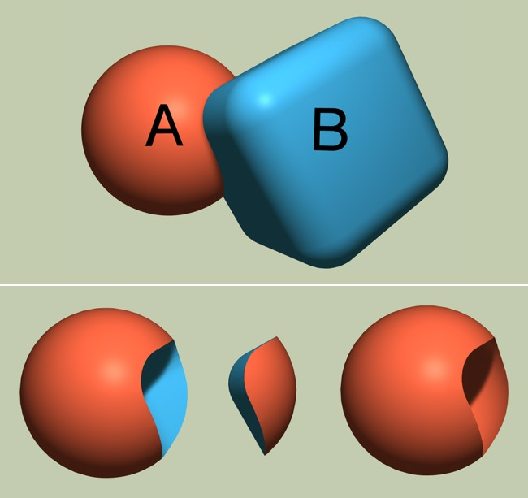

Function available in CINEMA 4D Prime, Visualize, Broadcast, Studio & BodyPaint 3D
使用布尔和实例对象
布尔计算基础
许多日常物品都可以用基本的圆柱体、球体或立方体创建，但很多时候你会要修剪出一个角、或在一个物体上打一个洞来实现想要的造型，如果你想用多边形工具来做这这些，首先需要将这些参数化的对象转换为可编辑多边形（ 转为可编辑对象
转为可编辑对象
上图：初始对象。下图：各种布尔操作。
在上图的上半部分中，显示的是使用相应布尔操作之前的两个初始对象。下图从左到右： A 减 B; A B 交集; A B 补集。剩下的功能是 A 加 B 合并两个对象并删除内部多边形（结果看起来跟上图的上半部分很像），操作的结果是由两个对象组成的“外壳” 。
实例对象
布尔并不总是需要用到真实的对象。例如，实例可以作为占位符对象或这个对象组。实例相比复制有一个优点，对原始对象做出的更改也会应用到实例对象上。实例对象可以通过从  实例
实例 复制
复制
以下案例掩饰了使用布尔对象、基本几何体和实例创建一支铅笔。所有相关对象的属性会保留可编辑状态。